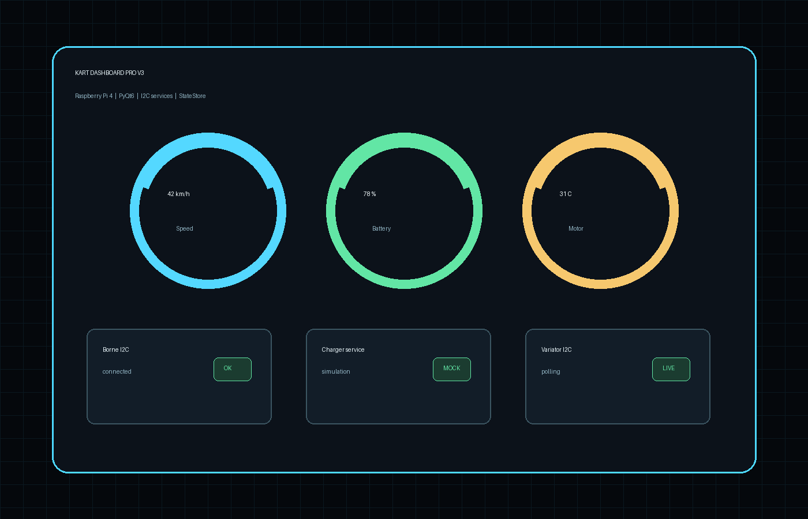
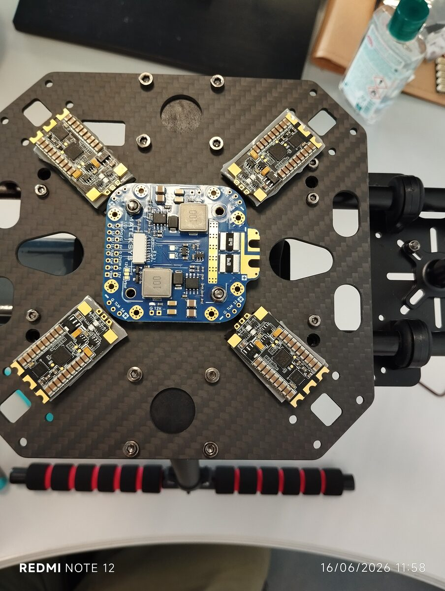
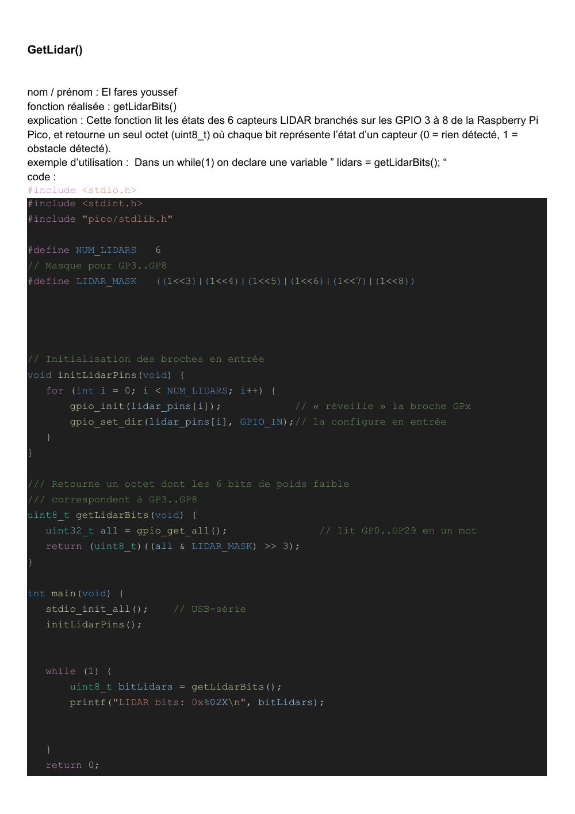
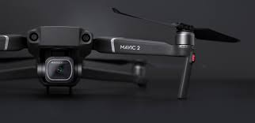

Index projets
Tous les projets
Vue d'ensemble des SAE, projets d'enseignement et stages. Chaque carte renvoie vers l'annee ou la page detaillee correspondante.
Troisieme annee
Systemes embarques, drone et IA

SAE BUT3
Kart Dashboard Pro V3
Dashboard Python / PyQt6 pour Raspberry Pi 4, services materiels et simulation.

Stage BUT3
Architecture drone ARODE
X500, Pixhawk, Jetson, SIYI, alimentation et tests progressifs.
IA / VLM
Detection et donnees synthetiques
Tests YOLO, DEIM/DEIMv2, RT-DETR et exploration de donnees synthetiques pour VLM.
Deuxieme annee
Robotique, FPGA et stage drone

SAE S3 — 2e place Cachan
Voiture autonome LiDAR
C++/Qt, LiDAR 360°, TCP/IP, correction de trajectoire en temps reel.

Robotique — Carte IR
Robot eviteur d'obstacle
Carte receptrice IR (photodiode, ampli, filtre 38 kHz, MCP3221 I²C).

SAE CPLD — FPGA DE10-Lite
Commande FPGA brushless
PWM VHDL 10 bits, boucle de regulation, afficheurs 7 segments et barre LEDs.

Stage BUT2 — LIST3N Reims
Detection de victimes par drone
DJI Mobile SDK, live stream ≤ 1 s, synchro video/GPS, megaphone embarque.
Premiere annee